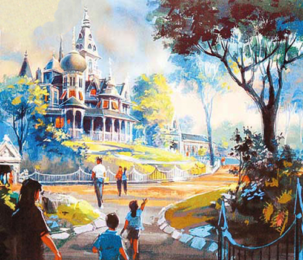

主题园区
美国小镇大街、探险世界、幻想世界、明日世界、灰熊山谷、铁甲奇侠总部，反斗奇兵大本营及迷离庄园。
<美国小镇大街>是香港迪斯尼乐园的七大园区之一，以复古形式展现了20世纪初美国市井风貌的美国小镇景致。砖砌的街道两侧有市政大厅、消防局、戏院，还有各式售卖纪念品和糕饼的小店。这些场景令人联想起美国西部片中小镇的场景，充满复古的趣味感和别致。
<灰熊峡谷>是香港迪士尼乐园内的一个主题园区，于2012年7月14日开幕。在充满西部风情的“灰熊山谷”，宾客可以感受到寻金小镇的繁华。创新的“灰熊山急速矿车”会突然向前冲、急速倒坠，带领游客穿山历险。同一时间还会有多辆矿车并排开行，惊险刺激。
<反斗奇兵大本营>延续了全球最卖座的动画电影《玩具总动员》的生命力，以电影主角安弟最喜爱的玩具为设计蓝本，将故事融于园区各个娱乐项目，游客宛若缩小至玩具般大小，在巨型的玩具世界中游走，与动画中的玩具们尽情历险。

<迷离庄园>是香港迪士尼乐园内的一个全球独有的主题园区，区内主要游乐设施为大宅。故事讲述一位英国探险家兼任冒险家・探险家学会成员-亨利爵士於热带雨林设立一座大宅并将地库改为博物馆，供予宾客参观，博物馆内摆放着不同的收藏品。
<探险世界>走进神秘探险胜地的核心，深入世上不为人知的地域，令人血脉沸腾的探险旅程，以及奇特的异域极地，让您考验自己的勇气和胆色。闯入从未纪录在地图的地域。置身不毛之地，满眼尽是奇美的景物，而且愈走近其核心地带，所发掘到的奇异事物愈多。
<明日世界>是一个充满科幻奇谈的地方。香港迪士尼乐园中明日世界的全新设计和感觉与其它的主题乐园截然不同，华特迪士尼幻想工程将整个园区创造成一个专为探索太空漫游奇遇与经历的星河太空港口。每个游乐设施、商店及餐厅均以宇宙飞船、浮动星体作装饰。